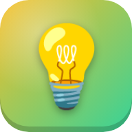

📚
Estudos Gamer
Escolha o seu app e bora estudar jogando!

Missão Saber6 matérias • 30 assuntosAprenda de tudo: frações, planetas, Egito, estados e capitais, inglês e mais.JOGAR ▶📲 Instale no celular
Abra o app que você quer e use o menu do navegador:
- No Android (Chrome): menu ⋮ → Instalar app ou Adicionar à tela inicial.
- No iPhone (Safari): Compartilhar ⬆️ → Adicionar à Tela de Início.
Depois da primeira visita, os apps funcionam até sem internet.
💾 Seu progresso
Fica salvo neste aparelho. Para levar para outro celular ou computador, use Perfil → Código da conta e, no outro aparelho, Restaurar.
🤖 Tutor com IA
Aqui no site, o tutor funciona no modo offline: procura as respostas no conteúdo do app. A IA de verdade funciona quando o app é aberto pelo link do claude.ai.